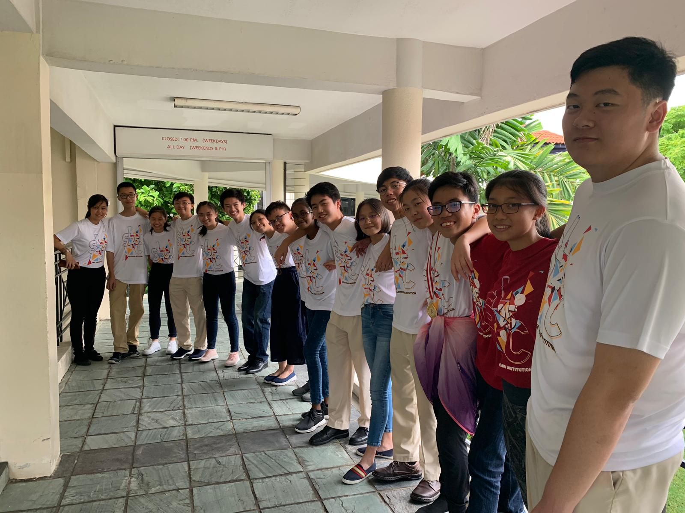

Youth Faculty 21: Adapting to Technological Advancements
Under Youth Assembly 7: Technology
Hi, we are from YF 21 and the issue that we will be discussing about is the adaption of technological advancements in student's education.
While exploring this issue, we encountered some problems, namely ...
- Students treating online assignments of less importance
Due to the nature of online assignments, there would not be a teacher or a superior guardian supervising the students. Hence, without the supervision students would then treat the online assignments lightly as they would not face immediate consequences and feel that such issue would be forgotten soonby the teacher.
On top of that, current online assignments are generally not graded. Hence, more students would treat it of less importance as it would not affect theirgrades in any way. - Parents - Child relationship turning sour due to child's increase mobile devices usage
With more assignments being assigned to students via online platform, it will result in students being stuck on their technological devices in order tocomplete them. Hence, misunderstanding might arise especially when parents are not educated about their child's technological devices usage and mightmisunderstand them as using them for their own entertainment purposes. - Students inevitably being exposed to inappropriate content
Due to the nature of the internet being open to anyone with the intent of accessing it, students might inevitably be exposed to inappropriate content.
Here are the solutions that we came of after pondering about the problems encountered ...
-
Creating a leader board system for their online assignments and letting teachers have the option to make their online assignments graded
Due to the nature of students being relatively competitive in all aspects, the implementation of a leader board system would help students to treat their online assignments of higher importance in order to remain the top in class in the leader board.
With the option to make online assignments graded, teachers could make them graded on their own discretion, making it just as an additional work for students or extra materials for students to catch up on topics which they are relatively weaker in. -
School organizing seminars for parents
With this seminar, school would then be able to have a platform to educate parents about their child technological devices usage and introduce up and coming tools and applications which parents could introduce to their child about which might increase their productivity or efficiency in their work etc. -
Wellness talks
With the approach of wellness talk, we would like to place emphasis on student leader to student wellness talk rather than the conventional teacher to student wellness talk as students leaders are of the same generation of the student body and are more open minded when approaching new and interesting issues. Hence, making the overall wellness talk experience for students a much more enriching and comfortable experience.
The overall objective of the wellness talk is to develop students holistically especially the value of self-discipline as while exploring the internet, they would be exposed to every type of content. Hence, the value of self-discipline is crucial as it enables them to filter which content is appropriate and which is not.
The Lens
Presenting to you, our Lens Video!
Act 1 Scene 1
Parents being uneducated about child's mobile phone usage in their education.
Act 1 Scene 2
Parents whom are well educated about their child's mobile devices usage and embracing it as a mean to help their child to learn better.
Act 2
An interviewer having an interview among 2 students of different mobile devices usage and allowance of usage of such similar technological devices. Showcasing about how technological devices affects them in their everyday lives and how the adoption of technology helps students especially in their education.
Act 3
Showcase of how the current usage of online platform to assign students online assignments and how it is ineffective in one's learning."
Exhibition
Here is a relatively summarized version of the content of the issue covered. Feel free to have a look!
(here we would include your exhibition boards, hopefully you left it in ops room)
Thank you for your time!
If you are a fellow student leader of your school, we hope you could implement these solutions according to problems faced in your school. Thank you for your time for visiting our presentation of our given issue once again! Thanks!